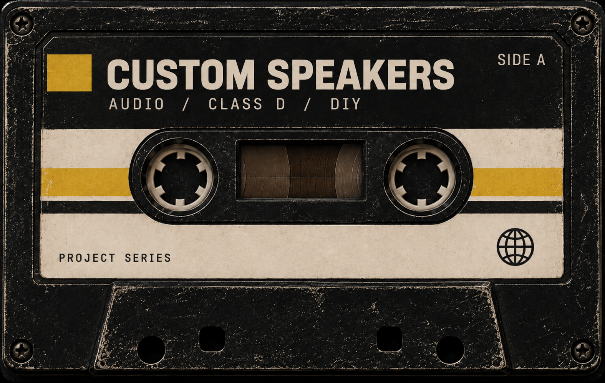
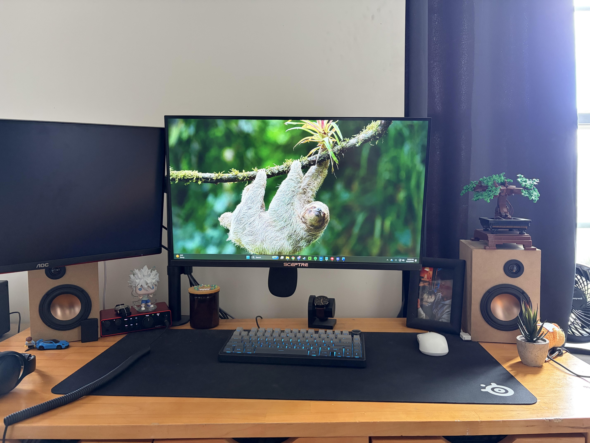
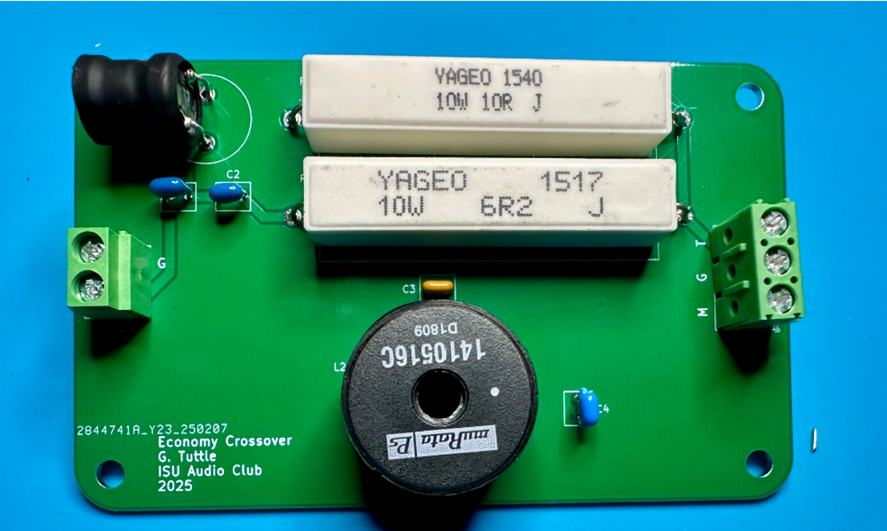
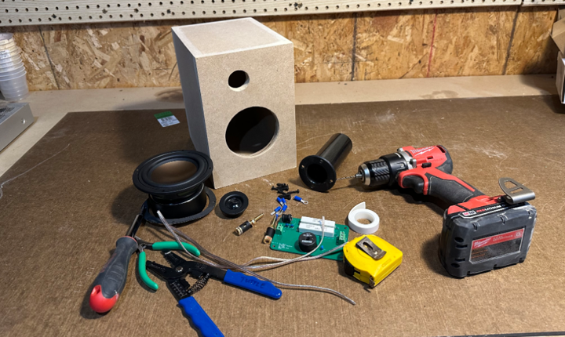
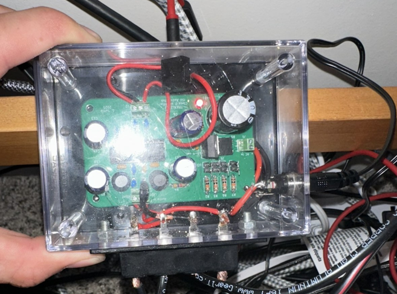

CUSTOM SPEAKERS
AUDIO • CLASS D • ELECTRONICS

PROJECT // OVERVIEW

ABOUT THE PROJECT
As you may have seen, many of my project are things that I use in my day to day life. They are things that you could most definitely go and buy from the store but I chose to make them projects for a few reasons:
If I get all the parts for something and build it myself it is generally cheaper.
I get to understand concepts I've learned in class by implementing them in real world examples.
It is satisfying to see the finished product.
And why not? It's fun!
These speakers are no different and out off all my projects these are definitely the ones that I use the most. They sit on my desk and I use them every day.



PROJECT GOALS
The main goal was to build a pair of working desktop speakers for my home setup.
- Learn how filtering and crossovers work.
- Understand audio amplification.
- Improve soldering skills.
- Deploy final built speakers.
DESIGN PROCESS
These speakers were built with Audio and Arduino club at ISU. First we walked through the
CHALLENGES
This is a good place to describe technical problems you encountered and how you solved them. Employers often care more about this than simply seeing that the finished project works.
RESULTS
Explain what ultimately worked, what the system can currently do, and what you learned while building it.
NEXT STEPS
- I would like to work on a subwoofer in the future because who doesn't like some more bass?